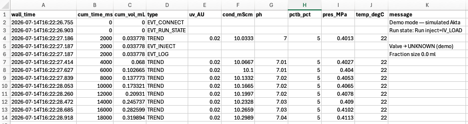

Viewing results
You can explore a chromatogram while a run is in progress, or reopen a saved log afterwards.
Reopening a saved run
Pass a CSV log file to the app to open it in viewer mode:
AktaPrime lysozyme_20260714_142530.csvThe full display is reconstructed — traces, events and fraction spans — with no instrument connection required.
Zooming and panning
Every chromatogram panel supports the standard interactions:
| Action | What it does |
|---|---|
| Drag (left mouse) | Zoom into a rectangle |
| Right-drag | Pan |
| Scroll | Zoom in/out |
| Ctrl-click | Reset the zoom to fit the data |
The panels share a common x-axis, so zooming or panning one moves them all together.
Choosing what to show
- The toggles on the right turn the %B, conductivity, pH and pressure panels on and off. The UV panel is always shown.
- The menu switches the x-axis between Plot vs time and Plot vs volume. The current view is carried across so you stay looking at the same part of the run.
Saving results as images
Click Save plot… to export the chromatogram exactly as displayed — the panels currently shown, at their current axis limits — to a PDF file. Files are numbered per session and saved in the current folder:
<prefix>_<date>_<time>_figure_1.pdf
<prefix>_<date>_<time>_figure_2.pdf
...PDF is a vector format, so the figures stay crisp at any size and are ready to drop into a report or manuscript.
Log file format
Each log is a plain CSV file that opens in any spreadsheet or analysis tool. A comment line records when logging started, followed by a header row and then one row per sample or event:
# Akta PRIME data log started 2026-07-14T14:25:30
wall_time,cum_time_ms,cum_vol_mL,type,uv_AU,cond_mScm,ph,pctb_pct,pres_MPa,temp_degC,message
A log file opened in a spreadsheet: TREND rows carry the sensor values, while event rows (EVT_CONNECT, EVT_INJECT, EVT_LOG, …) carry a message.
| Column | Meaning |
|---|---|
wall_time | Clock time the row was written |
cum_time_ms | Cumulative run time (ms) |
cum_vol_mL | Cumulative run volume (mL) |
type | TREND for a data sample, or an event type (e.g. EVT_INJECT, EVT_LOG) |
uv_AU | UV absorbance (AU) |
cond_mScm | Conductivity (mS/cm) |
ph | pH |
pctb_pct | Gradient %B |
pres_MPa | Pressure (MPa) |
temp_degC | Temperature (°C) |
message | Text of an event row (blank for trend rows) |
Trend rows carry the sensor values; event rows carry a message and leave the sensor columns blank.